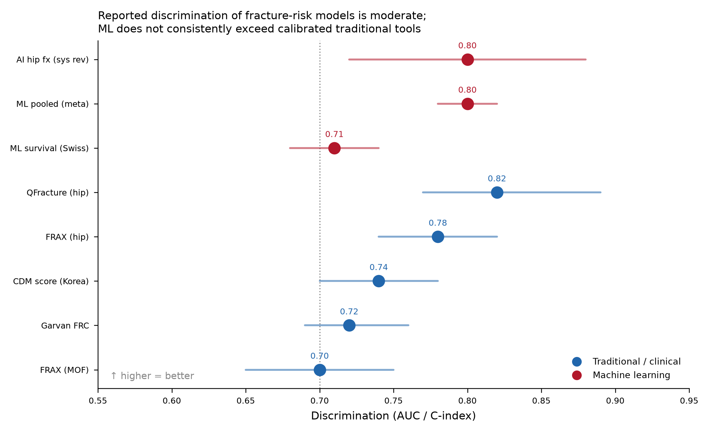
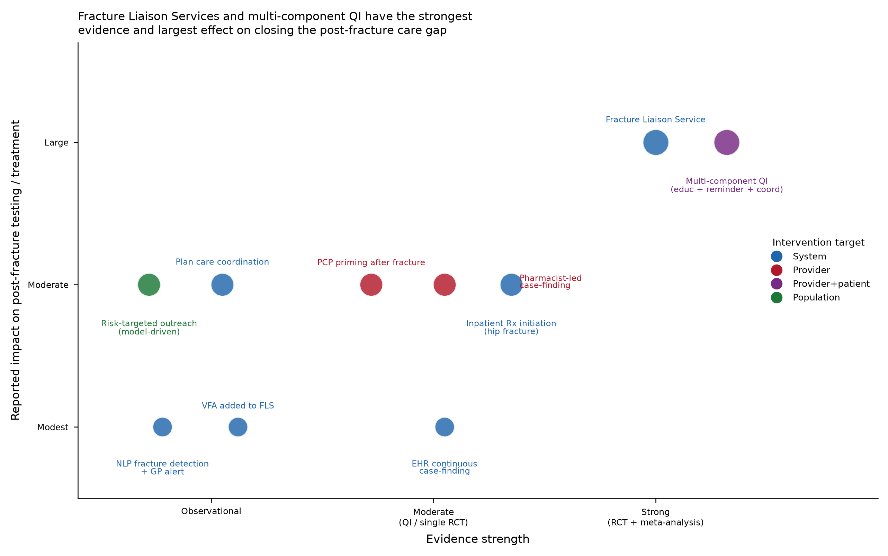

OMW: from fracture claim to closed gap
This hub consolidates your OMW research, measure logic, dual-axis risk scoring ideas, outreach design, and engineering specs into one navigable package for the team. Use it as the shared mental model for Stars quality, clinical rules, and care outreach.
Start by role
Pick the path that matches how you’ll use this package.
Key takeaways
- Fracture risk ≠ OMW failure risk. FRAX/Garvan/QFracture answer “who will fracture.” OMW is failed by women who already fractured and then miss BMD or treatment in 180 days. Those are two different models on two different populations.
- The clock starts when the fracture lands. Denominator entry (qualifying fracture in the intake period) starts a 180-day window. Scoring and outreach must run as soon as the episode is known—ideally at ADT, not after the full claims picture arrives.
- Complexity rarely buys AUC; calibration and net benefit do. Discrimination for fracture tools is typically ~0.65–0.80. ML does not consistently beat well-specified Cox/logistic models. Optimize for temporal validation, calibration, and top-K outreach utility.
- FLS-style, multi-component outreach wins. Single reminders underperform. Coordinator-led Fracture Liaison Service pathways and multi-component QI bundles are the strongest evidence base for closing gaps.
- Fairness is operational, not cosmetic. OMW failure correlates with race, dual eligibility, and deprivation. Use those signals to direct more barrier-removing outreach—never to ration care.
- Engineering risk is adoption, not math. A pre-denominator score that Stars doesn’t surface at ADT time produces no ROI. Enrichment must be in the workflow, not a lookup table nobody opens.
Measure specification (OMW)
Osteoporosis Management in Women Who Had a Fracture is an NCQA HEDIS measure that feeds Medicare Star Ratings. It is the percentage of women ages 67–85 who sustained a qualifying fracture and then received either a bone mineral density (BMD) test or osteoporosis medication within 180 days of the index episode.
Denominator (eligible population)
- Age: 67–85 as of Dec 31 of the measurement year
- Sex: administrative female at any point in history
- Enrollment: continuous from 365 days before the episode date through 180 days after (Medicare medical + pharmacy)
- Qualifying fracture in the intake period via outpatient visit, ED visit, or inpatient discharge with fracture on the claim
Intake period: July 1 of the year prior to the MY through June 30 of the MY. Captures the member’s first qualifying fracture; the 6-month numerator clock can still run past June 30.
| Term | Definition |
|---|---|
| Episode date | OP/ED: date of service. Inpatient: discharge date (last admission if transfer chain). |
| IESD | Index Episode Start Date — earliest episode date in the intake period meeting all EP criteria. Numerator window measured from IESD. |
Numerator (gap closure)
Compliant if, on the IESD or within 180 days after it, the member has either:
- A BMD test in any setting (e.g., central DXA), or
- Osteoporosis medication — dispensed prescription or administered/infused agent
Either action closes the gap; both are not required. A normal BMD still closes the measure (evaluation counts).
Illustrative codes only BMD CPT families include 76977, 77078, 77080, 77081, 77085, 77086. Therapy includes bisphosphonates, denosumab, raloxifene, anabolics, etc., including HCPCS J-codes for infused/injected agents. Always use current NCQA value sets.
Exclusions (remove from denominator)
Prior management
- BMD within 24 months before episode
- Osteoporosis therapy / dispensed Rx within 12 months before episode
Non-qualifying sites
- Finger, toe, face, or skull fractures
Advanced illness / frailty / end-of-life
- Hospice or palliative care
- Ages 67–80 with advanced illness and frailty
- Ages 81+ with frailty
- I-SNP enrollment or long-term institutional residence
Open full measure brief (markdown) Open full strategy report
Operational failure modes
These are the recurring, addressable reasons eligible women fail the measure—each is a lever for modeling and outreach.
- No owner after the fracture. Wrist/vertebral fractures treated in ED/urgent care generate the claim, but no one owns the osteoporosis workup. Ortho/ED ↔ PCP fragmentation is the dominant pattern.
- 180-day window quietly closes. Fracture healing, rehab, and deferred follow-up consume the clock—especially for late intake-period fractures.
- Inpatient hip discharged without a plan. Focus on surgical recovery; therapy not started before discharge and not picked up outpatient.
- Silent vertebral fractures. Incidental imaging findings under-coded or not communicated.
- Coding false positives. Old/healed or “history of” fractures coded as acute pull members into the denominator. Removal usually requires a corrected claim—not a soft exclusion.
- Stale management misread as exclusion. Teams assume prior DXA/therapy still protects when lookbacks have expired.
- Access & adherence barriers. Transport to DXA, cost of infusions, bisphosphonate hesitancy, low literacy convert orders into unfilled gaps.
Timeline & clock
| When | What happens | Implication |
|---|---|---|
| Before any fracture | Model A scores broader eligible women for fracture risk; proactive BMD/treatment keeps members out of OMW denominator | Primary prevention lane |
| Qualifying fracture (ADT or claim) | Denominator entry; IESD set; 180-day numerator window opens | Score Model B / enrich PRE_OMW immediately |
| Days 0–60 | High-leverage outreach; aim for BMD scheduled | Leading indicator: BMD scheduled by day 60 |
| Days 60–90 | Escalate open gaps; medication initiation target | Leading indicator: Rx by day 90 |
| Day ~90 checkpoint | Re-tier; move Tier 3 open gaps to Tier 2 | Capacity-aware escalation |
| Day 180 | Window closes; compliant or fail label final for measure logic | Labels feed next model training cycle |
Two models, not one
The central design decision across your materials: “score women at risk of fracture” and “score women likely to fail OMW” are different prediction problems. Conflating them ranks by bone risk when the plan needs probability of an open, closable care gap under a 180-day clock.
Model A — Fracture-risk / screening
Population: broader eligible female membership (esp. 67–85) without a recent fracture.
Target: incident major osteoporotic or hip fracture (e.g., 2-year horizon).
Purpose: primary prevention and pre-emptive BMD/treatment so osteoporosis is managed before a fracture starts the OMW clock.
Ceiling: C-index roughly 0.70–0.80 (hip better than composite).
Feature lean: age, prior fracture count, falls, glucocorticoids, BMI, T-score, CVD — FRAX-style predictors computable from plan data where possible.
Model B — OMW-failure (operational core)
Population: true OMW denominator — women 67–85 with qualifying fragility fracture, continuously enrolled, not excluded.
Target: fail = no BMD and no osteoporosis Rx by day 180 post-episode.
Purpose: rank the live gap list so finite coordinator capacity hits women least likely to close on their own.
Evidence anchor: Boytsov 2017 — OMW failure patterned by patient, geography, and provider factors in a health-plan cohort.
Feature lean: access, engagement, provider panel OMW rate, DXA distance, deprivation, adherence history, setting of care.
Algorithm stance
- Baseline: penalized logistic (B) and Cox (A) — transparent, auditable, often competitive.
- Primary candidate: gradient-boosted trees with monotonic constraints on clinically directional features.
- Escalate complexity only if it beats trees on temporal/external validation and decision-curve net benefit at the capacity threshold—not on CV AUC alone.
Feature catalog (29 features · 8 domains)
Everything intended to be computable from data a plan already holds: enrollment, medical/pharmacy claims, provider directory, address-derived SDOH. Tags: A fracture model · B failure model · Both
| Domain | Feature | Model | Why it matters |
|---|
Evidence & prediction ceiling
Fracture-risk tools (FRAX, Garvan, QFracture) and ML variants show moderate discrimination and fragile calibration across populations. Head-to-head work finds no single dominant tool; hip fracture is easier to predict than broader osteoporotic endpoints. A Swiss registry study with UK Biobank external validation found ML survival models did not consistently beat a well-specified Cox model (Lehmann 2024).

| Model | Family | Discrimination | Validation | Key ref |
|---|
Download prediction_models_comparison.csv · Literature corpus (49 sources)
Clinical outreach model
The outreach model turns Model B failure scores into action inside the 180-day window. Operating principle from the evidence: the strongest strategy is a coordinated, FLS-style pathway (Wu 2018), and multi-component interventions beat single-component ones (Nayak 2018, 43 RCTs). The model does not choose whether to intervene multi-modally—it always does. It chooses intensity and the lead barrier-specific tactic.
Workflow
- Identify (continuous) — claims + pharmacy + imaging/NLP case-finding; apply measure exclusions.
- Score & tier (daily) — Model B + time-to-deadline + dominant barrier.
- Assign & act — Tier 1 coordinator, Tier 2 bundle, Tier 3 light touch, or hip fast-track. Provider and member components fire together.
- Track to closure — monitor BMD claim or osteoporosis dispense; re-score mid-window; escalate open gaps.
- Close or document — numerator met, exclusion, or disenrollment per spec.
- Feed back — outcomes become next training labels and provider panel-rate features (closed learning loop).
Risk tiers & intervention mapping
Tier cut-points are set by outreach capacity (top-K operating point), not an abstract probability threshold.
Named care coordinator, active BMD scheduling, provider engagement, barrier removal. Typical drivers: no PCP, long DXA distance, high deprivation, low adherence, OP/ED fracture with no natural follow-up.
Provider alert + patient outreach + scheduling assist. Bundled but less labor-intensive than full FLS.
Single reminder + passive monitoring. Escalate to Tier 2 if still open at ~day 90.
Any qualifying hip fracture during admission routes to in-hospital treatment initiation regardless of score (Kuiper 2018). Best single opportunity to close the gap.
Barrier → lead intervention
| Dominant barrier (from features) | Lead intervention |
|---|---|
| No attributed PCP / no usual source of care | Assign/connect to PCP; coordinator owns scheduling end-to-end |
| Long distance / no nearby DXA | Mobile DXA, telehealth osteoporosis visit, or pharmacy-based initiation |
| Inpatient hip fracture | In-hospital treatment initiation before discharge |
| Low medication-adherence history | Pharmacist counseling + simplified regimen + refill support |
| Provider with low panel OMW rate | Provider education, order-set prompts, panel gap reports |
| Silent / under-coded vertebral fracture | VFA / imaging review to confirm and prompt treatment |
| High deprivation / dual-eligible | SDOH navigation, transportation, prioritized coordinator time |
Evidence-based tactics (ranked)

| Tactic | Evidence | Effect (summary) | HEDIS relevance | Ref |
|---|
Success metrics
Primary
- OMW rate (numerator / denominator) overall
- Same rate within subgroups (race, dual status, rurality, deprivation)—not average-only improvement
Operational
- Top-K list precision (worked members who would have failed without contact)
- Coordinator contact rate
- Time from episode → closure
Reach equity
- Contact and closure rates by race, dual, rurality, ADI
- Intensive pathway reach for historically failing groups
Leading indicators
- BMD scheduled by day 60
- Medication initiated by day 90
Two-system architecture (engine ↔ Stars)
Your engineering specs describe a structural peculiarity of OMW: the denominator is event-triggered. The clinical rules engine maintains a large, relatively stable pre-denominator alert pool (OMW-C): women 67–85 who would be eligible if a fracture occurred (no recent BMD/drug exclusions, no hospice/frailty, etc.). The Stars team holds that pool but activates outreach when their ADT feed shows a fracture and cross-references the pool.
| Rules engine | Stars intervention team | The gap (root cause) |
|---|---|---|
| Evaluates enrolled females 67–85; applies pre-denom exclusions; fires standing OMW-C alerts; pre-computes risk scores | Holds alert pool; monitors own ADT; launches intervention when ADT + pool match; prefers to own ADT activation | Non-claims ADT outpaces claims-based BMD exclusion. BMD with service date pre-fracture but receipt date post-intervention → retroactive disqualification after outreach cost is spent |
PRE_OMW_RISK_SCORE (pre-denominator enrichment)
Token PRE_OMW_RISK_SCORE is a dual-axis weighted score pre-computed for every member in the engine alert pool
before any ADT fires. It does not trigger outreach. It enriches the alert when Stars’ ADT gate opens
so the team knows how confidently and urgently to respond—without re-deriving scores at trigger time.
FRAC — Fracture risk axis
Probability this member will have an osteoporotic fracture in the near term (pre-event).
N-CMP — Non-compliance risk axis
Probability that if she fractures, she will not have BMD or osteoporosis therapy within the measure window.
DUAL_HIGH (high on both axes independently) = intersection of greatest fracture likelihood and greatest non-compliance likelihood—highest-confidence outreach targets when ADT fires. Members with signals of likely self-resolution (e.g., older BMD history suggesting prior engagement) can be deprioritized or held briefly.
Design principles from the token spec
- Exclusion pre-filter before scoring (hospice, advanced illness, frailty, LTC, active OMW drug 12 mo, BMD within 730 days of run)
- Monthly batch refresh of scores into a lookup table; enrichment layer appends score at ADT cross-reference
- Pharmacy claims are fast (24–48h); BMD professional claims are slow — this asymmetry drives the sequencing problem
- Proposed mitigation stack: real-time exclusion refresh at ADT + hold-window protocol for medium/lower N-CMP
PRE_OMW_RISK_SCORE Spec v1.1 (docx) · PreDenom Token Spec (docx) · HEDIS OMW Scoring Model (docx) · MultiModel Design Brief (docx)
Strategic risks & opportunities
From the devil’s-advocate analysis of the pre-denominator scoring layer—each risk paired with a concrete win if addressed.
| # | Problem | Risk if unaddressed | Opportunity |
|---|---|---|---|
| 1 | Scoring weights unvalidated on your population | Model dismissed after year one if conversion ≈ flat outreach | Retrospective validation on 2–3 prior OMW years; calibrate FRAC/N-CMP weights & DUAL_HIGH thresholds before go-live |
| 2 | Two-system architecture is fragile—Stars may ignore the score | Lookup table nobody queries; no behavioral change | Flip dependency: engine delivers enriched alert into the workflow (capacity argument, not “use our score”) |
| 3 | BMD retroactive disqualification not fully solved by scoring | DUAL_HIGH washouts erode trust | Real-time exclusion refresh at ADT + 7–14 day hold window for medium/lower N-CMP |
| 4 | Uneven signal quality across data sources | Month-to-month tier churn confuses care managers | Source confidence metadata on every score; feed quality loop back to data owners |
| 5 | Two-system design hardening into permanent infrastructure | Duplicate logic / divergent conclusions in EPIC-FHIR future | Use validated score as proof point to reopen architecture at EPIC onboarding |
Strategy deck (gap closing)
Shareable PowerPoint for team strategy discussions — five focus strategies, tiers, barrier mapping, and a phased roadmap.
OMW Gap Closing Strategy
14 slides: problem framing, evidence hierarchy, focus portfolio, operating rhythm, metrics & decisions.
Open PowerPointInteractive demos
Open these HTML prototypes in a browser (works offline from this folder).
Source library
Original materials packaged with this hub. Share the whole OMW Team Hub folder (or zip it) so relative links keep working.
Research Strategy & evidence
- OMW strategy report (combined evidence + design)OMW_strategy_report.md
- Measure specification briefomw_measure_brief.md
- Predictive model design blueprintmodel_design_blueprint.md
- Clinical outreach model designoutreach_model_design.md
- Feature catalog (CSV)feature_catalog.csv
- Outreach tactics (CSV)outreach_tactics.csv
- Prediction models comparison (CSV)prediction_models_comparison.csv
- Literature corpus — 49 verified sources (CSV)literature_corpus.csv
Engineering Specs & tokens
- PRE_OMW_RISK_SCORE Spec v1.1docx
- PreDenom Token Specdocx
- HEDIS OMW Scoring Modeldocx
- MultiModel Design Briefdocx
- Strategic risk analysis — 5 problems & opportunitiesdocx
Ops Also in original HEDIS folder (not all copied)
- iCloud path for broader HEDIS materials…/CloudDocs/HEDIS/
- OMW Claude Research originals…/CloudDocs/OMW Claude Research/
FAQ
Why not just use FRAX for outreach prioritization?
FRAX (and similar tools) predict fracture occurrence. OMW outreach prioritization needs the probability that a woman who already fractured will still miss BMD/therapy in 180 days. That is Model B—driven more by access, engagement, provider, and setting than by classic fracture CRFs alone.
Does a high failure score mean we should deprioritize that member?
No. High failure risk should trigger more intensive, barrier-matched help (Tier 1 / FLS-equivalent). Using SDOH or race signals to ration care would amplify disparities; the design uses them for fairness auditing and barrier removal (Navarro 2011 showed integrated case-finding can reduce disparities).
What is the single highest-leverage inpatient action?
Initiate osteoporosis treatment during the hip-fracture admission when appropriate (order-set / PDSA). The discharge-date clock and recovery focus make post-discharge catch-up unreliable; in-hospital initiation is the fast-track override in the outreach model.
How do we prevent wasted outreach from late BMD claims?
Combine (1) exclusion pre-filter on the pre-denom pool, (2) real-time pharmacy/lab exclusion refresh at ADT, and (3) a short hold window for members with intermediate N-CMP signals suggesting prior bone-health engagement before burning coordinator capacity.
What should we validate before production?
Retrospective run of FRAC/N-CMP (or Model B) against prior measurement years: do high scores predict actual non-compliance and fracture events? Calibrate thresholds to capacity; report discrimination, calibration, top-K precision, and subgroup reach. Temporal validation is mandatory.
How should we share this hub?
Zip or share the entire package via OneDrive/iCloud/Teams. Recipients open index.html for the Strategy Studio or knowledge.html for this library. Relative links to demos, CSVs, markdown, and docx files stay intact when the folder structure is preserved.